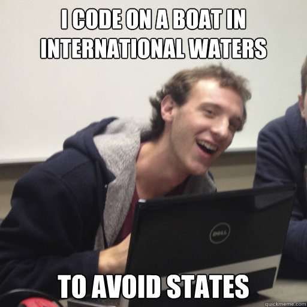
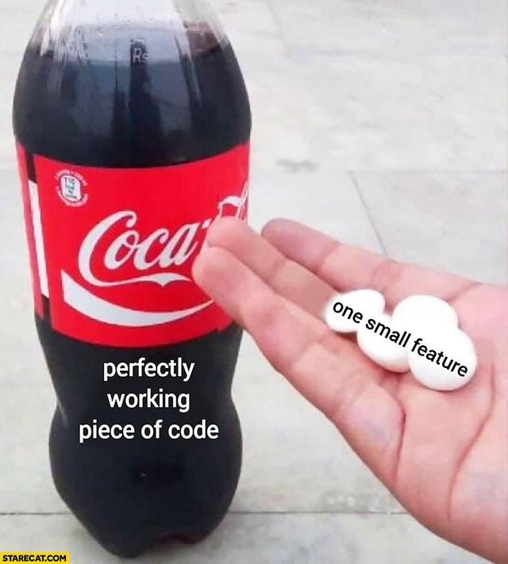
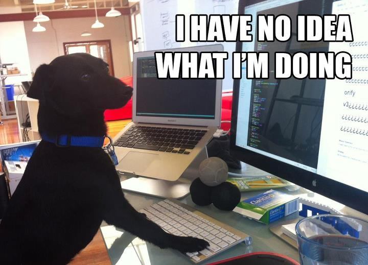

class: middle # Functional as a First Paradigm #### `Becoming Immutable in a Mutable World` ``` github: @cam-carter twitter: @camn_carter ``` --- class: middle ## Hi, my name is Cam __Here's a little bit about me:__ - I'm not from here. - I graduated from university in __New Orleans__ with a degree in __Computer Science__ - This happened in May, and I moved to __Cincinnati__ two weeks later. - I work at Gaslight, writing __Elixir__. - I also play music, have a __cat__, and ride a motorcycle. ??? I'm not from here. I'm from Louisiana, so Ohio has been a bit of a change of pace. Sometimes I feel like I'm catching up, but then everybody starts slowing down. And then I slow down, but you guys all speed up. And the cycle continues yada yada --- class: middle, center ??? And here's a picture of Ohio for those of you who aren't from here --- class: middle ### Assumptions and questions 1. Your first language is important. 💻 2. Imperative and OOP dominate your early life as a programmer. 👶🏻 2. Functional programming could prove to be a better option. 💡 4. How can we change this? ❓ 5. Can we even do that? 🤔 ??? So here's some assumptions and questions I'm going to raise during this talk, so if you'd be so kind to listen. Why should all this matter to a new developer? And I'm asking this as a new developer. I've been doing this stuff for 8 months now, and all of those 8 months have been spent working on an Elixir application. And before this I was immersed in computer science academia which is a heck of a lot different than software development. --- class: middle ### You first language is important! (Right?) __Right!__ - It sets the standard for learning future languages - The first language you learn impacts how you approach programming - Your livelihood is on the line! What's gonna land you the best job? .center[] ??? So is your first language important? I think so. It sets the standard for learning future languages! Does this new language that your learning get you excited about programming? Do you want to learn more? Your first language can be very impactful to answering these questions. Most likely you're learning to program in order to get a job as a developer. I could be wrong their, but whether it be unversity or a tech bootcamp, what you're learning is important for your career. But, it's not necessarily the language that is important. You can learn C, Java, Python, Haskell, etc. What really matters most is the paradigm! --- class: middle ## What the heck is a programming paradigm? ??? Well that just raises the question: what the heck is a paradigm? --- class: middle ### First the word __paradigm__: > A philosphical and theoretical framework of a scientific school or discipline within which theories, laws, and generalizations and the experiments performed in support of them are formulated. <br> > — _The Mirriam-WebStar Dictionary_ __Or to keep it simple...__<br> A paradigm is just a pattern of different stuff about a thing A __programming paradigm__ is a way to classify a language based on its patterns and features. ??? A paradigm is a philosophical and theoretical framework of scientific school or discipline within which theories, laws, and generalizations and the experiments performed in support of them are formulated. To keep things simple: a paradigm is just a pattern of different stuff about a thing So a programming paradigm must be a way to classify languages based on their patterns --- class: middle ### The big two __Imperative__ and __Declarative__ Imperative includes: - procedural - _groups instructions into um... procedures?_ - object-oriented - _...procedures are oriented into objects_ Declarative includes: - functional - _the only one I sorta understand_ <span style="color: #8e8e8e"># what we're gonna talk about</span> - logical - _largely based on formal logic (e.g., Prolog)_ - mathematical - _exactly how it sounds?_ ??? I like to think of programming paradigms separated into two big categories: imperative and declarative. Most of you folks probaby probably learned an imperative language first and use it on a day-to-day basis. This includes: C++, Java, python, all that good stuff. But! You probably also use a declarative language everyday, too. I'm talking about SQL. Whether your're an object-oriented developer or a functional one, in the end, we all have to use SQL. That's beside the point. I'm here to talk about my experience as a new developer only really understanding functional programming, and also why I think it could be a good choice for other newbies out there like myself. --- class: middle ### Societal standards... We all learn an imperative and OO language first (well usually) __But why is OOP so popular?__<br> 1. It was thought to be easier to learn 2. It was thought to make code reuse easier 3. It was hyped 4. It created a new software industry These are all valid points... ??? We all learn OO before functional programming. But why? Well probably because it's what it used most. According to Joe Armstrong, the creator of Erlang (probably pretty biased against OO) 1. It was thought to be easier to learn. (I disagree a little here) 2. It was thought to make code reuse easier. (I also disagree with this one) 3. It was hyped. (now we're getting to some truth) 4. It created a new software industry. These are all valid points, but the same can be argued for functional programming nowadays. But what even is functional programming? --- class: middle ### So, what even is functional programming? > In computer science, functional programming is a __programming paradigm__—a style of building the structure and elements of computer programs—that treats computation as the evaluation of __mathematical functions__ and avoids __changing-state__ and __mutable__ data. <br> > — _Wikipedia_ ??? In computer science, functional programming is a __programming paradigm__-a style of building the structure and elements of computer programs-that treats computation as the evaluation of mathematical functions and avoids changing-state and mutable data. The key difference functional languages have is that they are algorithm focused rather than data focused. Hence the term _functional_ programming. They are designed to strictly avoid changing-state and mutable data. Programs are usually structured into functions that have smaller functions inside of them that sometimes even spit out other functions! It's excited really, I swear --- class: center, middle ### It's exciting really, I swear <img src="assets/images/no-exit-condition.jpg" alt"No exit condition!" width="600"> ??? You might be wondering... why is this important for a new developer? Why might a language that avoids state, side-effects, and mutable assignments benifit someone new to programming? And before I move on to the next slide, let me add that my first language was not functional. It was actually Visual Basic way back when, and way back when is really not that long ago, seeing as I'm only 22. --- class: middle ### It's all about the good stuff! __Benefits of functional first:__ - (Depending on the language) It's more human readable! - There's more focus on algorithmic composition - You don't have to worry about pesky side effects in your program - Programs are smaller and more modular - Applications have better scalability - Concurrency! ??? Here's my shortlist of benefits for why a modern functional language could be a good choice as a first language to learn. Let me emphasize the word _mordern_ here. And let me also emphasize when I say modern, I'm mostly referring to Elixir. The first time I learned a functional language was in university when we were taught Scheme. And let me tell you. That was the worst. Looking back, after messing around with Lisp. I'm sure I just hyperbolized my situation into a bad experience, but boy oh boy, did that dissuade me from picking up functional programming again. I thought it was all like Scheme: hard to read, hard to understand, and don't even get me started on the parantheses. I mean just take a gander for yourselves --- class: middle ### Take a gander ```lisp (defun fibonacci (n) (if (or (zerop n) (= n 1)) ; (zerop n) is (= n 0) which is really n == 0 for most of us 1 (+ (fibonacci (1- n)) (fibonacci (- n 2))))) ; (1- n) is shortand for (- n 1) which is just n - 1 (fibonacci 5) ; ==> (3) ``` ??? We all know what recursion is, and I learned that by writing Fibonacci's sequence and Towers of Hanoi over and over and over and over But after looking at that for the first time, I suddenly lost all urge to dive further into functional programming. Let's go over this. 1. We're defining the function fibonacci and taking one parameter n 2. We're checking if n == 0 or n == 1, and if so returning just 1 3. Then we get to the actual recursion that makes since The classic fib(n - 1) + fib(n - 2) But with the caveate of having to get through a lisp function --- class: middle, center ??? That was a lot to handle, but let's pick out something important. --- class: middle ### Why do we do this? For many years MIT taught Lisp as their introductory programming language. Most notably with the book, _Structure and Interpretation of Computer Programs_. __Here's probably why:__ - You're introduced to a lot of core concepts that other languages most likely use - There's hardly any syntax to learn, so you focus more on these core concepts - There's a LOT of resources already available ??? Why do we do this to ourselves? Or really the future generation of programmers? I'm not saying lisp is bad, but I believe that there's definetly a more approachable language to be teaching the functional paradigm. So for many years MIT taught Lisp as their introductory programming language. Most notably with the book _Structure and Interpretation of Computer Programs_. (which doesn't even introduce local assignment until 300 pages in btw) My guess is this was the standard because it introduces you to a lot of core concepts that become trivial to learn with other languages; there's not a whole lotta syntax to learn, so you can focus on these core concepts; and, there's already a lot of existing resources. --- class: middle, center ??? That was a lot to handle, so is there a different way? --- class: middle, center ### Is there a different way? <img src="assets/images/lisp-is-different.jpg" alt="Lisp is different?" width="600"> ??? So, how do we get to that first benefits that I saw in functional programming? How do we not turn away new programmers by introducing them to scary things like Lisp and Scheme? That's where I think Elixir comes in. Now I don't want you all to think that this talk is secretly Elixir propaganda, but if you are enticed to learn it, I will also take credit for that. __change slide__ But first let's backtrack a little --- class: middle ### = or =? __Did you catch that?__ ``` (= n 1) is the same as n == 1 ``` ??? Well that's because that equals sign is truly an equals sign. Not an `assigns` sign as we learn first off in OO This more closely relates to what we all learn before programming and that ladies and gentlemen is basic algebra x may equal y but 1 definetly doesn't = 2 --- class: middle ### Fibonacci's Sequence in Erlang ```erlang fibonacci(0) -> 0; fibonacci(1) -> 1; fibonacci(N) -> fibonacci(N - 1) + fibonacci(N - 2). lists:map(fibonacci/1, lists:seq(0, 4)) % ==> [0, 1, 1, 2, 3] ``` ??? Again there's a lot more going on. A little easier to read, but still a lot. So we've got 3 different functions with the same name. What's up with that? Two Words: Pattern Matching --- class: middle ### And then there's Elixir ```elixir def fibonacci(0), do: 0 def fibonacci(1), do: 1 def fibonacci(n), do: fibonacci(n - 1) + fibonacci(n - 2) Enum.map(0..4, & fibonacci(&1)) # ==> [0, 1, 1, 2, 3] ``` ??? It's way easier to understand! Even if you don't know a darn thing about functional programming, it at least doesn't give you a headache by looking at it. But why this? Well We're getting more with less. --- class: middle, center  ??? __What concepts did we just introduce?__ - Pattern matching - Variable assignent - Polymorphism - And even the `Enum` module from Elixir's standard library! That's a lot of bang for our buck. Obviously, if I were creating a curriculum teaching introductory programming with Elixir, I wouldn't throw all that stuff at you on day one. But entertain me for a moment! I like to think of functional languages as a series of learning plataeus, especially Elixir. A series of topics that you're gonna spend some amount of time on each of them. The first of which is thinking functionally, then pattern matching, etc. Climbing up the stairs, but occasionally coming back down because you missed something or there's something more to learn. __change slide__ When I found Elixir, it was like a dream come true! I had a language that gave me so much and asked for so little. And I never had to write a loop or conditional block again. Before I was writing with a functional language as a web developer, I was modeling low-level computations with Python (and not very good Python at that). So any shift away from that could be seen as positive. --- class: middle ### __So what?__ ### Why is this idea of being introduced to more concepts quickly a good one? ??? But so what? Why is this idea of being introduced to more concepts quickly a good one? Think of it as this: You're given a big box of tools (not power tools obviously), and you may not know how to use most of those tools. But at least you have them. And when you go to build you're first house, you might do everything with a hammer. But if you're anthing like me, you're sure as hell gonna build that house with just a hammer. This is the philosphy I've gathered over my past 8 or so months with Elixir. I had all the tools there. I had documentation ready to go in my browser, but when I found a cool new tool in the box, that was the only one I used for about two weeks, and then I moved on to the next. --- class: middle ### What else is good? __Functional code is idempotent__ > The output of a function only depends on the arguments passed in, so you can call a function twice (or however many times) and always receive the same value. No side effects, no worries. __Functional code is *sometimes* easier to work with__ > Since the output of our functions don't depend on any local or global state, we can much more easily understand and predict the behaviour of our program. _So why is all this good for a new developer?_ ??? Being new to programming is sometimes overwhelming, so when you don't have to worry about things like side effects in your program or the lack of referential transparency, you can focus more on the structure of your functions and their use. This can also be translated to tangible skills in the workplace, especially when you're practicing concepts like Test Driven Development. Personally, I was put on a massive Elixir application that implemented a plethora of higher level concepts than I was used to like event-sourcing and caching. However, there wasn't the concern of implementing a smaller, easier feature and bringing the rest of the application crashing down with me. That's exactly how I've built up my knowledge so far. I started on these smaller features and eventually made my way to the more difficult concepts used in the application. --- class: middle ### It's good for you (the not-new developer), too! __Your application could benefit__ > The lack of side effects and state management allow for greater scalability and modularity for applications. __Tests and more tests__ > Less side effects means better testing; better testing means less bugs; and less bugs means happier developers. ??? It's difficult for me to draw too many comparisons between developing an application with a functional language and an OO language, seeing as I don't have that much experience with the latter. But, from the little I do have, I can certainly say that I have had an easier experience overall with adding features and writing tests and refactoring existing code. These are all things we have to deal with on a day-to-day basis, so why not make it easier on ourselves? --- class: middle, center  ??? We definetly don't want to be caught in the situation where something like this could happen. But functional or not, depending on the circumstances, it can be difficult to avoid this. --- class: middle ### Concurrency! __Applications are depending more on concurrent processes__ > So why not write those applications in a language that avoids negatively affecting the final outcome of concurrent processes? __We see more companies needing to handle many users__ > Erlang was built over 30 years ago for this exact reason! When you've got a whole bunch of people trying to do the same thing at the same time, why not use a techonolgy meant for that? ??? As we see technology grow and the industry change, we're seeing more use cases for functional systems. We've got more users than ever, so why not build concurrent systems to handle those users? --- class: middle, center  ??? I want to disclaim here that even with all these good things functional brings early in the game, it can still feel like you have literally no clue what you're doing. I think that goes without saying when writing software. --- class: middle ### So... what next? __How can we change the way things are?__ > We can start by teaching more accessible functional languages that don't scare people away. This means getting modern functional languages into college curriculums and bootcamps. __What about the right to choose?__ > Let's give new programmers a choice by offering an OO track and functional track. And why not do both? As software changes shouldn't we change the way we're teaching people how to make it? ??? So what next? How do we actually change things, so we start encouraging new programmers to learn functional languages? We can start by teaching languages that don't scare off newbies like myself, but that means we have to start teaching them at all. Why not give new programmers choice? Offer an OO track and a functional track and even mix the two. There's benefits to both, but so far learning to code has been a one-sided story. --- class: middle, center ??? Can we change the way things are? --- class: middle ### Can we even do this? __Probably not__ > OO dominates the industry, meaning most jobs are using that paradigm. And if that's where the jobs are, then that's what we're going to teach people, and that's what new programmers are going to want to learn. __Do we care to?__ > Pople get comfortable, so why change things? I don't expect large companies with legacy software to spend the time and money to start using functional languages. ??? Honestly I've become comfortable, and I see myself writing Elixir for a the forseeable future --- class: middle ### But, there's still hope! __Functional languages are growing in popularity__ > We're currently seeing a rise in community around functional languages, especially Elixir. People are starting to see and use it as a viable alternative to current technologies. __Adoption by the industry__ > Larger companies and high-traffic startups are starting to shift more of their services to and built on Elixir and Erlang (e.g., Netflix, Whatsapp, Discord). Which means the potential for more functional jobs in the industry for juniors like myself. --- class: middle, center --- class: middle ### Shout out to: Wikipedia<br> Stackoverflow stranger for lisp code<br> Dave Thomas for Elixir code<br> Joe Armstrong<br> Reddit for the memes<br> College professors who made me hate functional programming<br> JavaScript for being the beautiful mess that it is ---